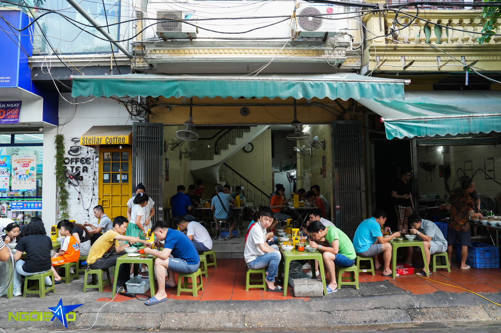
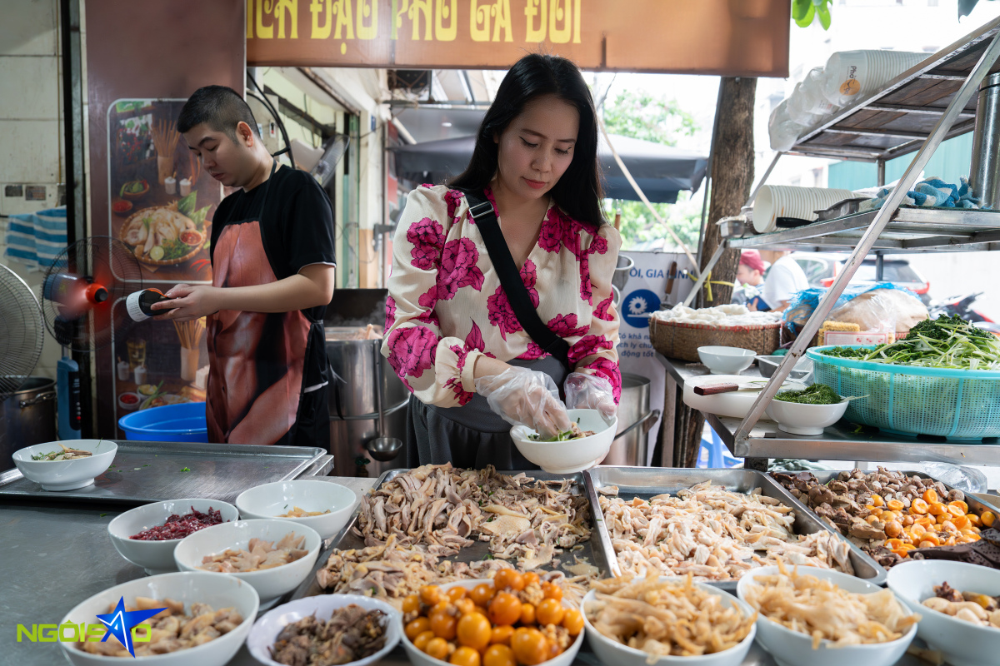
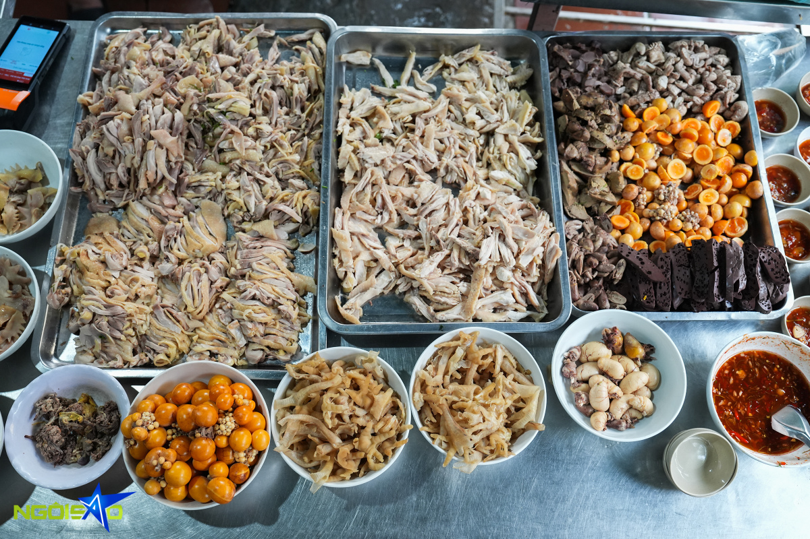
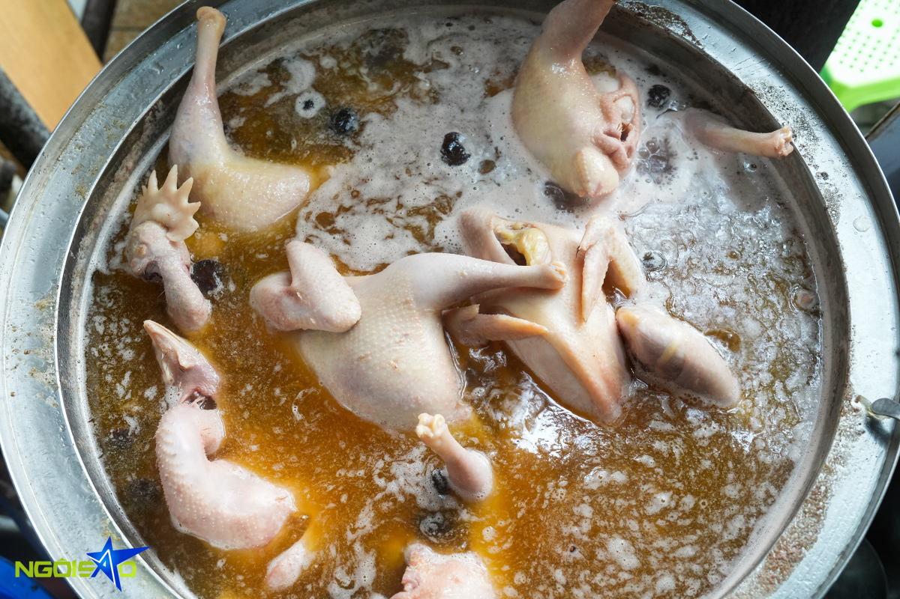
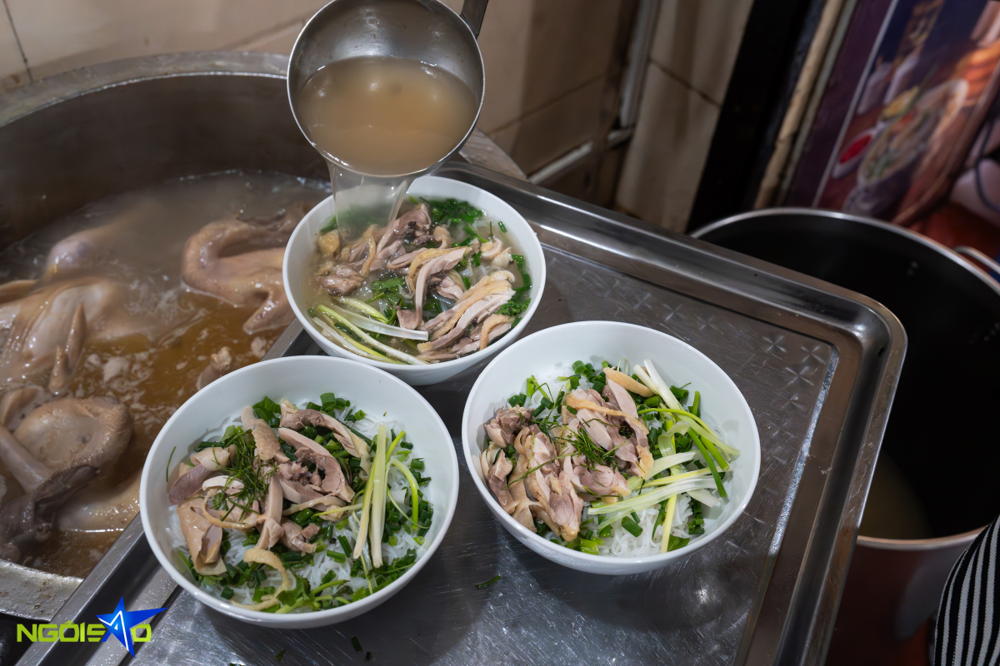
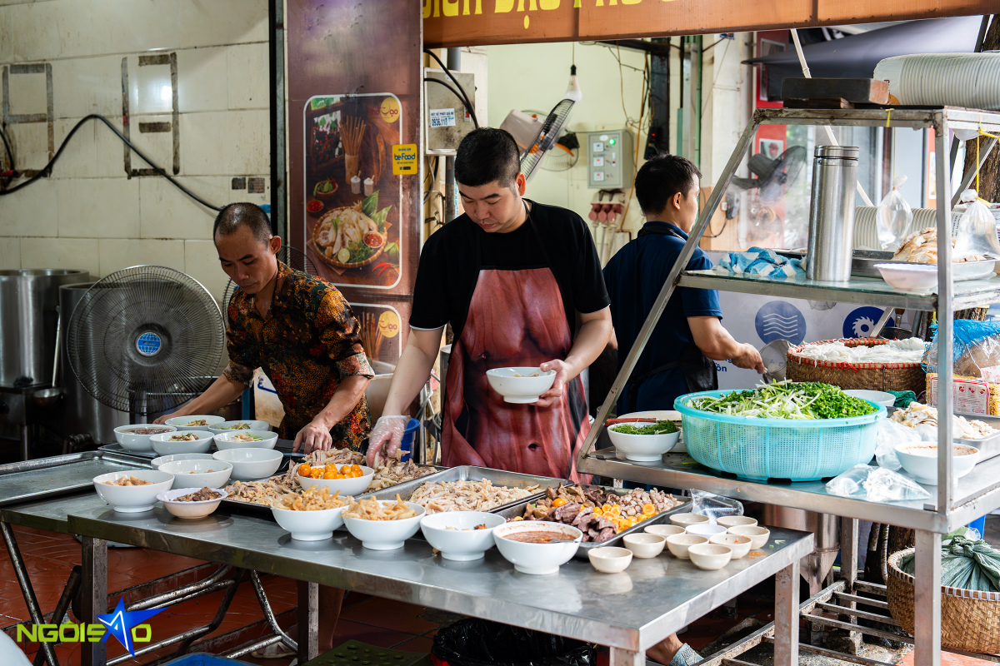
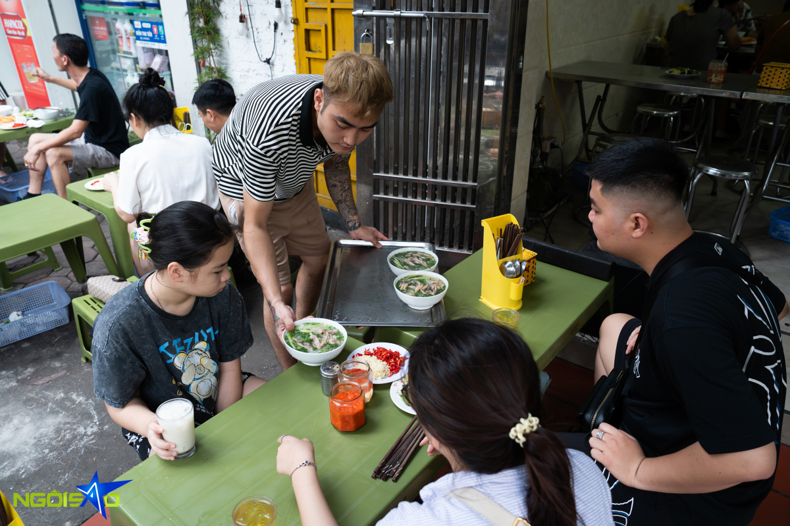
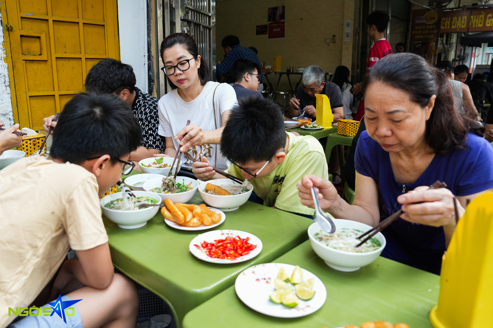

Hanoi comfort food: decades of chicken pho satisfaction
For over two decades, a beloved Hanoi chicken pho spot has been known for its noodles paired with various chicken cuts and broth simmered for hours, along with welcoming service.

For the past 23 years, a hidden chicken pho restaurant located at No. 03, Lane 2, Tran Quy Kien Street, Cau Giay District, Hanoi, has been a beloved destination for many local residents and diners.
Operating from 5:30 a.m. to 2 p.m. daily, the restaurant has a large space that's kept clean and comfortable for the capital’s street-food connoisseurs.

"Bich Dao, the restaurant's owner, arranges chicken meat and ladling broth into bowls. Many customers compliment the restaurant owner for being cheerful and willing to accommodate their needs or requests.
""I learned how to cook pho from my aunt. With my passion and prior cooking experience, it was not hard for me," Dao said.
"Encouraged by my family and friends, I decided to establish a chicken pho business in my home in 2001. At the beginning, attracting customers was challenging. However, through word-of-mouth, the restaurant gradually gained popularity, drawing in a large number of customers over time."

As one steps inside the restaurant, the sight of golden-skinned chicken on trays immediately captivates. A standard chicken, weighing between 1.4 and 1.5 kg, is selected for its firm meat. After boiling, the meat is divided into portions, including breast, thighs and wings all arranged for display.

The soul of Dao's chicken pho lies in its broth, simmered for 8-10 hours using chicken and pork bones. The bones are soaked and cleansed with vinegar to rid them of impurities. Boiled in saltwater and vinegar, they are then simmered at a moderate temperature overnight.

The broth is simmered starting at 10 a.m. the day before and is ready for sale when the restaurant opens at 5:30 a.m. the following morning.
Each day, the restaurant sells over a quintal of pho noodles, totaling approximately 500-600 bowls, and utilizes around 80-90 chickens, varying based on their size and weight.

With over 12 staff, each assigned specific tasks, the restaurant hums with efficiency. From meat cutting to noodle blanching and broth pouring, every aspect of the operation is tuned to deliver a seamless dining experience.

Patrons are spoilt for choice with two varieties of chicken pho on offer: regular chicken pho and mixed chicken pho, each accompanied by seven different side dishes on offer. Prices range from VND50,000 to VND100,000 ($2 to $4).
For VND100,000, diners can savor a premium chicken pho experience, featuring thigh meat, wings, boneless legs, rooster testicle, ovaries, and heart. Dao noted that among the chicken pho options, the chicken thigh pho is favored by customers.

Thanh Giang, a regular patron from Cau Giay District, visited the restaurant with her family for breakfast. "The pho broth is aromatic, and the chicken meat is tender and flavorful," she said. She added that her family frequently visits the restaurant for breakfast during their leisure time.
From 7:30 a.m. to 8:30 a.m., the restaurant reaches its peak, with diners filling every available space. Some spill out onto the sidewalk, waiting in line.
A bowl of Dao’s chicken pho features pieces of chicken with crunchy skin atop a bed of noodles bathed in broth, enhanced by lemon leaves. Diners can customize their dish with chili peppers and lime wedges at their table to suit their taste preferences. Besides the quality of the chicken, the restaurant's friendly and professional service attitude also earns high praise from customers.